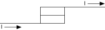
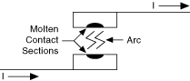
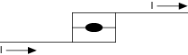

提交有关此主题的反馈。
提交有关此主题的反馈。 访问ni.com/support以获得技术支持。
访问ni.com/support以获得技术支持。每个开关系统都有一定量的电感。当继电器通过电感打开电路时，继电器触点上会产生电弧，有时会造成严重损坏。簧片继电器开关的小质量使得簧片在电弧放电期间更容易受到损坏。
弹跳时，第一个瞬时闭合启动电流流过继电器。当触点打开时，会形成可以熔化部分触点表面的电弧。如果触点最终稳定在闭合位置并在重新打开之前凝固时仍然熔化，则会形成微焊缝，从而永久关闭继电器。当电流停止流过线圈时，簧片的弹簧力可能不足以破坏该焊缝。这种接触焊接构成继电器的寿命终止。下面的图顺序说明了继电器弹跳、电弧和焊接闭合。



如果您通过已经关闭的继电器发送大电流，也可以焊接触点。非零接触电阻会升温并导致上述相同的焊接现象。下面的序列图显示了大电流焊接继电器闭合。
提交有关此主题的反馈。 访问ni.com/support以获得技术支持。